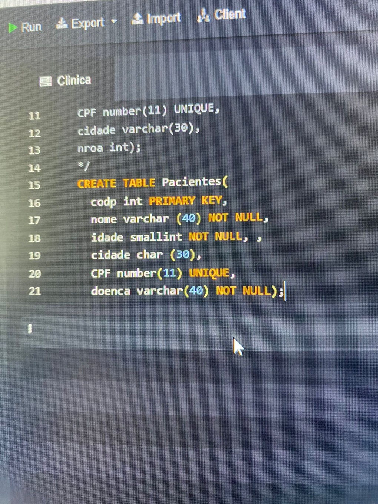

Port - TI
Banco de Dados
Um dos temas abordados esse ano que mais gostei de executar.
A integrada do terceiro bimestre teve várias etapas, decidi ficar com SQL, pois tenho mais facilidade.
Ficamos um o tema de Pet Shop, e tive que criar 10 tabelas.
Parece ser bem complexo, mas depois que você pega os comando tudo flui mais fácil.
O trabalho foi feito em conjunto, adorei o resultado e o meu desempenho.
Imagens:
